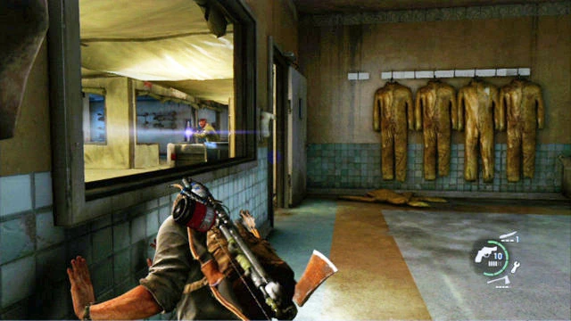

содержание
Джексон
Джексон
Глава
Глава

Сезон: Весна
Подглавы:
Эпилог
Локация:
Джексон
Мультиплеер
Артефакты:
0
Учебники:
0
Комиксы:
1
Медальоны «Цикад»:
0
Хронология
Предыдущая глава:
Лаборатория Цикад
«Джексон» - эпилог в игре «Одни из нас».
Элли и Джоэл добираются до Округа Джексон и, бросив машину, проделывают остаток маршрута к поселению Томми пешком. Во время этого пути Джоэл делится с девочкой мыслями о том, что она и Сара могли бы быть отличными друзьями. Добравшись до места, где они расстались с Томми, Элли подмечает, что она чувствует за собой некоторую вину за смерть Райли, Тесс, и Сэма и просит поклясться Джоэла, что все, что он сказал про Цикад - правда. Джоэл лжет, отвечая: «Клянусь».
Финальная сцена ролика и самой игры заканчивается кадром на Элли, которая отвечает: «Ладно», прежде чем начинаются финальные титры.
Глава «Джексон» содержит следующие предметы коллекционирования:
Сюжет
Эпилог
Элли и Джоэл добираются до Округа Джексон и, бросив машину, проделывают остаток маршрута к поселению Томми пешком. Во время этого пути Джоэл делится с девочкой мыслями о том, что она и Сара могли бы быть отличными друзьями. Добравшись до места, где они расстались с Томми, Элли подмечает, что она чувствует за собой некоторую вину за смерть Райли, Тесс, и Сэма и просит поклясться Джоэла, что все, что он сказал про Цикад - правда. Джоэл лжет, отвечая: «Клянусь».
Финальная сцена ролика и самой игры заканчивается кадром на Элли, которая отвечает: «Ладно», прежде чем начинаются финальные титры.
Коллекционные материалы
Глава «Джексон» содержит следующие предметы коллекционирования:
- Артефакты - 0
- Медальоны Цикад - 0
- Справочники - 0
- Комиксы - 1
- Дикие Звезды: Сингулярность - после того, как Элли и Джоэл окажутся в лесу, необходимо пройти к правому его краю, там на кресле разрушенного автомобиля и будет лежать последний комикс в игре.